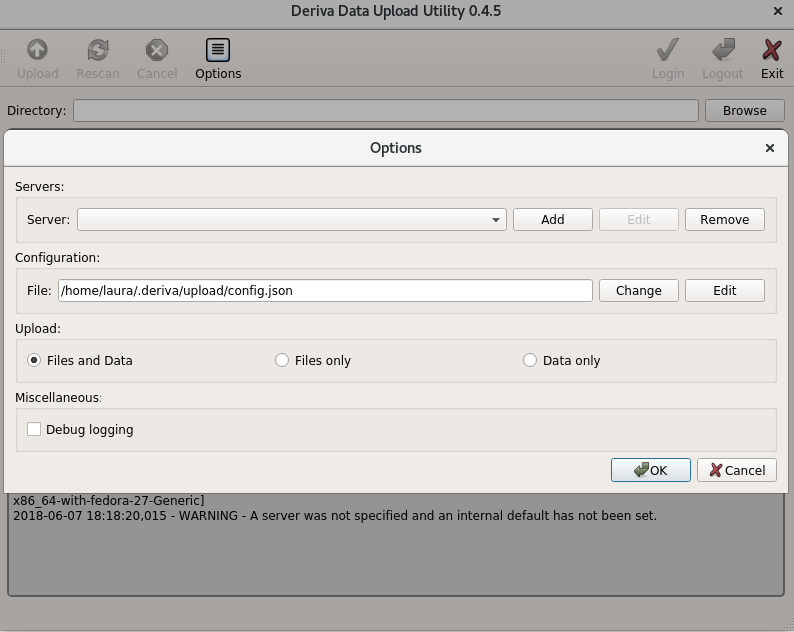
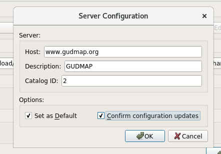
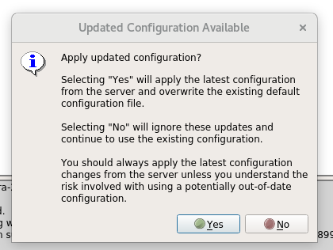
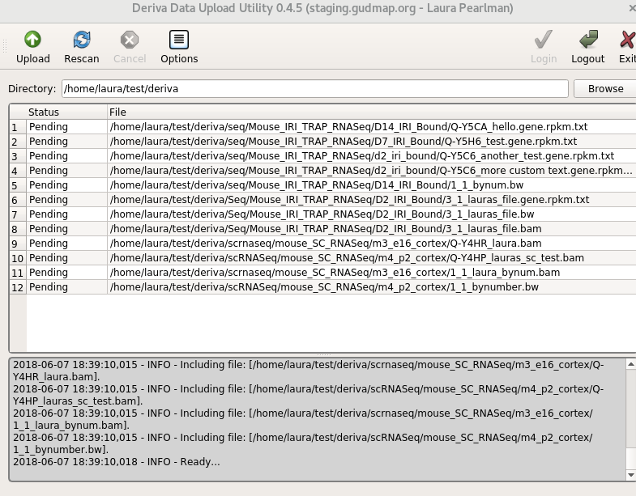

Uploading files via DERIVA-Upload and DERIVA-Auth
DERIVA provides client tools to upload data assets to a DERIVA deployment. DERIVA-Upload handles the movement of the data files. DERIVA-Auth provides an authentication token which is required when using the command-line interface.
There are two versions of the client tool:
a graphical interface that can be run to upload files from your desktop system, and
a command-line interface that can be used to upload files from a remote server
Although the process for downloading and running the above tools are different, they both use the same directory structure designed for different data types.
From a desktop system
The desktop client is convenient for data files that are on your local system and aren’t too large or numerous.
1. Initial setup
The first time you launch deriva-upload (through the applications menu on Windows or MacOS, or with the deriva-upload command on Linux), the tool will ask you if you want to add a server configuration. Click “yes” to bring up the “Options” screen (you can also do this at any time by clicking the “Options” button at the top of the page).

Click “Add” to bring up the “Server Configuration” form and enter the values provided by the DERIVA administrator.
The following are example values for the GUDMAP/RBK deployment.

2. Uploading files
In the main Deriva-Upload window, click the “Login” button at the top to log in. This will pop up a login dialog window. Once you’ve logged in, you may see a window notifying you that an updated configuration is available and asking if you’d like to apply it; you should click “Yes” to update your configuration and dismiss the window.

Next, in the main Deriva-Upload window, click the “Browse” button and select the deriva directory you created above. You’ll see all the files you created, listed as “Pending”.

Click the “Upload” button to start the upload process. The status of each file will change as it’s uploaded; for successful uploads, the status will change from “Pending” to “Complete”.
3. Logging out
Authentication tokens expire after 30 minutes of activity; you can log out explicitly by clicking on the “Logout” button at the top of the window.
From a remote server
If your data is on a remote server and/or the data is very large or there are many files involved, you’ll want to use the command-line interface (CLI).
Using the CLI on a remote server is a bit more complicated. First, you’ll need to get an authentication token by running the DERIVA-Auth tool on your desktop. Then you’ll run the command-line tool on the remote server.
1. Initial setup
On your desktop system, install the latest version of DERIVA-Auth here (for Mac or Windows desktops) or here (for Linux desktops).
On the remote server, install the latest version of deriva-py:
pip3 install --upgrade git+https://github.com/informatics-isi-edu/deriva-py.git
2. Getting an authentication token
Upload requests are authorized using OAuth2; to obtain an OAuth token, run the deriva-globus-auth-util utility on the host from which you’ll be uploading files:
deriva-globus-auth-utils login --host host
You can add the --refresh option if you want the token to last beyond the default timeout. This will generate a URL for a OAuth consent page and ask you to paste the resulting authorization code:
Please paste the following URL in a browser:
https://auth.globus.org/v2/oauth2/authorize?client_id=[long url redacted]
Please Paste your Auth Code Below:
Paste the URL into a browser, follow the directions there, and then paste the authorization code back into the deriva-globus-auth-utils session. This will create and store your OAuth token.
Please paste the following URL in a browser:
https://auth.globus.org/v2/oauth2/authorize?client_id=[long url redacted]
Please Paste your Auth Code Below:
[code redacted]
Login Successful
To end the session, you can allow the token to expire or run:
deriva-globus-auth-utils logout
3. Uploading files
On the server, run the command:
deriva-upload-cli –catalog n host /path/to//deriva
where:
n is the catalog number (if specified by your DERIVA administrator; otherwise this option can be omitted),
host is the hostname provided by your DERIVA admin, and
/path/to//deriva is the path to the
derivadirectory you created above.
For example:
deriva-upload-cli --catalog 2 www.atlas-d2k.org $HOME/deriva
4. Logging out
Authentication tokens expire after 30 minutes of activity; you can log out explicitly by clicking on the “Logout” button at the top of the DERIVA-Auth window.